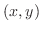
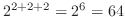
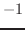

Subsections
The Xwindow interface on EusLisp becomes available when EusLisp is
invoked by the name of 'eusx'.
3The "DISPLAY" environment variable should be properly set to your Xserver,
since eusx tries to connect to Xserver referencing
the "DISPLAY" environment variable when it starts up.
EusLisp defines three levels of xwindow interface:
(1) Xlib functions, (2) Xlib classes, and (3) XToolKit classes.
All the xwindow functions described in this section and the following
XToolKit section are contained in the "X" package.
The function names of the original Xlib are changed so that
all constituent letters are converted to upcase
and the first 'X' prefix is removed.
For example, XdefaultGC is named X:DEFAULTGC,
not X:XDEFAULTGC.
The Xlib functions are defined as foreign functions
as the lowest level interface to Xwindow system.
These Xlib functions should be used carefully,
since parameter type check or parameter number check is not performed.
For an instance, all the Xlib call requests x:*display* argument
to identify the connection to Xserver, and if you forget it, Xlib reports
an error and the process dies.
The second level interface, Xlib classes are provided
to avoid this inconvenience and to make the interface object-oriented.
This section focuses on this second level interface.
Even higher level xwindow library called XToolKit is explained
in the next section.
Classes described in this section have the following inheritance
hierarchy.
propertied-object
viewsurface
x:xobject
x:gcontext
x:xdrawable
x:xpixmap
x:xwindow
colormap
Xlib global variables and misc functions
x:*display* [variable]
-
- X's display ID (integer).
x:*root* [variable]
-
- default root window object.
x:*screen* [variable]
-
- default screen ID (integer).
x:*visual* [variable]
-
- default visual ID (integer).
x:*blackpixel* [variable]
-
- black pixel = 1
x:*whitepixel* [variable]
-
- white pixel = 0
x:*fg-pixel* [variable]
-
- default foreground pixel referenced at window creation,
normally *blackpixel*.
x:*bg-pixel* [variable]
-
- background pixel referenced at window creation,
normally *whitepixel*
x:*color-map* [variable]
-
- the system's default color-map
x:*defaultGC* [variable]
-
- the default gcontext referenced at pixmap creation.
x:*whitegc* [variable]
-
- GC whose foreground color is white.
x:*blackgc* [variable]
-
- GC whose foreground color is black.
*gray-pixmap* [variable]
-
- the result of (make-gray-pixmap 0.5)
*gray25-pixmap* [variable]
-
- 16x16 pixmap,
a quarter of pixels are *fg-pixel* and three quarters *bg-pixel*.
*gray50-pixmap* [variable]
-
- 16x16 pixmap, a half of pixels are *fg-pixel*.
*gray75-pixmap* [variable]
-
- 16x16 pixmap, three quarters of pixels are black.
*gray25-gc* [variable]
-
- 25% gray GC made from *gray25-pixmap*.
*gray50-gc* [variable]
-
- 50% gray GC made from *gray50-pixmap*.
*gray75-gc* [variable]
-
- 75% gray GC made from *gray75-pixmap*.
*gray* [variable]
-
- "#b0b0b0"
*bisque1* [variable]
-
- "#ffe4c4"
*bisque2* [variable]
-
- "#eed5b7"
*bisque3* [variable]
-
- "#cdb79e"
*lightblue2* [variable]
-
- "#b2dfee"
*lightpink1* [variable]
-
- "#ffaeb9"
*maroon* [variable]
-
- "#b03060"
*max-intensity* [variable]
-
- 65535
font-cour8 [variable]
-
- (font-id "*-courier-medium-r-*-8-*")
font-cour10 [variable]
-
- (font-id "*-courier-medium-r-*-10-*")
font-cour12 [variable]
-
- (font-id "*-courier-medium-r-*-12-*")
font-cour14 [variable]
-
- (font-id "*-courier-medium-r-*-14-*")
font-cour18 [variable]
-
- (font-id "*-courier-medium-r-*-18-*")
font-courb12 [variable]
-
- (font-id "*-courier-bold-r-*-12-*")
font-courb14 [variable]
-
- (font-id "*-courier-bold-r-*-14-*")
font-courb18 [variable]
-
- (font-id "*-courier-bold-r-*-18-*")
font-helvetica-12 [variable]
-
- (font-id "*-Helvetica-Medium-R-Normal-*-12-*")
font-lucidasans-bold-12 [variable]
-
- (font-id "lucidasans-bold-12")
font-lucidasans-bold-14 [variable]
-
- (font-id "lucidasans-bold-14")
font-helvetica-bold-12 [variable]
-
- (font-id "*-Helvetica-Bold-R-Normal-*-12-*")
font-a14 [variable]
-
- (font-id "*-fixed-medium-r-normal-*-14-*")
x:*xwindows* [variable]
-
- a list of all windows including subwindows
created and maintained by EusLisp.
x:*xwindow-hash-tab* [variable]
-
- a hash table to look up the xwindow object
by its drawable ID.
In the event structure obtained by x:nextevent is a window ID,
and x:window-main-loop calls x:event-window to know
the corresponding xwindow object using this table.
xflush [function]
-
-
sends all commands retained in the Xlib command buffer to Xserver.
Since Xlib buffers output to Xserver,
commands you issued commands to Xserver are not executed immediately.
This is necessary to decrease network traffic and the frequency
of process switching.
To flush the command buffer to see the effects of the commands,
use xflush or send :flush
message to xwindow objects.
find-xwindow subname [function]
-
-
Each xwindow may have name specified at the creation time.
Find-xwindow looks in the *xwindows* list and returns a list
of windows that have 'subname' as a substring
of its name.
Xobject [class]
:super geometry:viewsurface
:slots
-
- The common super class for all the Xwindow related classes.
Currently, no slots variables and methods are defined.
Xdrawable [class]
:super Xobject
:slots (drawable ; drawable ID
gcon ; this drawable's default graphic context object
bg-color ; background color
width height ; horizontal and vertical dimensions in dots
-
- Xdrawable defines rectangular regions where graphics objects such as
lines and strings can be drawn.
Xdrawable is an abstract class to define
common methods for xwindow and xpixmap,
and instantiation of this class has no effect.
:init id [method]
-
-
Id is set to the drawable slot as the ID of this drawable.
A new GC (graphic context) is created and set to gcon as
the default GC of this drawable object.
:drawable [method]
-
- returns drawable id.
:flush [method]
-
- flushes commands retained in the Xlib's buffer.
:geometry [method]
-
-
returns the list of seven geometric attributes,
root-window-id, x-position, y-position,
width, height, border-width and visual's depth.
:height [method]
-
-
returns the height (dots in y direction) of this drawable.
:width [method]
-
-
returns width (dots in x direction) of this drawable.
:gc &rest newgc [method]
-
-
If no newgc is given, the current gc object is returned.
If newgc is an instance of gcontext,
it is set to the gc of this drawable.
Otherwise, newgc is regarded as a message and sent to
the current gc.
:pos [method]
-
- returns an integer vector representing
the position of this drawable.
The position is always defined relative to the
parent window, and windows created as direct subwindows of the root
window under the intervention of the window manager return the constant
coordinates in their surrounding title window regardless to their
true position in the root.
:x [method]
-
- returns the x coordinate of this drawable relatively to
the parent window.
:y [method]
-
- returns the y coordinate of this drawable relatively to
the parent window.
:copy-from drw [method]
-
-
Drw is another drawable object (xwindow or pixmap).
The contents of drw is copied to this drawable.
Figure 16:
drawing primitives
|
|
:point x y &optional (gc gccon) [method]
-
-
draws a point at  with optional gc.
:line x1 y1 x2 y2 &optional (gc gcon) [method]
-
-
draw a line from (x1, y1) to (x2, y2)
with optional gc. x1, y1, x2, andy2 must be integers.
:rectangle x y width height &optional (gc gcon) [method]
-
-
draws a rectangle whose center is located at (x, y)
and size is specified by width and height.
:arc x y width height angle1 angle2 &optional (gc gcon) [method]
-
-
draws an elliptic arc whose center is (x, y) and starting angle at
angle1 and ending angle at angle2.
Angles should be given by radian.
:fill-rectangle x y width height &optional (gc gcon) [method]
-
-
fills in a rectangular region.
:fill-arc x y width height angle1 angle2 &optional (gc gcon) [method]
-
-
fills in an arc.
:string x y str &optional (gc gcon) [method]
-
-
displays the string str starting at (x, y). The background is
not filled.
:image-string x y str &optional (gc gcon) [method]
-
-
displays an imagestring of str. Imagestring fills background.
:getimage &key x y width height (mask #ffffffff) (format 2) [method]
-
-
gets ximage from the server and returns the pixel data in a string.
The pixel data sent from the server is once stored in Xlib's ximage structure,
then copied to the string row by row.
The ximage structure is automatically destroyed.
The image string obtained by :getimage can be used to make
a pixel-image, which can be written to a file in the pbm formats
as described in section 18.6.
:putimage image &key src-x src-y dst-x dst-y width height ((:gc g) gc) [method]
-
-
puts image to the specified location in this drawable.
image is a string or a address pointing to an ximage structure.
:draw-line from to [method]
-
-
is same as :line method,
and provided for the compatibility with other viewsurface classes.
:line-width &optional dots [method]
-
- sets line-width of this drawable's
default GC. Use of the :gc :line-width message is recommended.
:line-style &optional dash [method]
-
- sets line-style of this drawable's
default GC. Use of the :gc :line-style is preferable.
:color &optional c [method]
-
- sets color of this drawable.
:clear [method]
-
-
clears full screen. this method calls :clear-area
:clear-area &key :x :y :width :height :gc [method]
-
-
clears a rectangle using the :fill-rectangle method.
Xpixmap [class]
:super Xdrawable
:slots
-
- Pixmap is a drawable that is often used
as a picture buffer or a background pattern.
Unlike xwindow, pixmap itself is not visible until it is copied to xwindow
or pixmap does not generate any event.
:init id [method]
-
- initializes this pixmap.
:create &key (width 500) (height 500) (depth 1) (gc *defaultgc*) [method]
-
-
creates a width x height pixmap with gc as its
default GC.
:create-from-bitmap-file fname [method]
-
-
creates a pixmap from a bitmap file.
:write-to-bitmap-file fname [method]
-
-
writes the contents of this pixmap into a bitmap file,
which can be read back to create a pixmap by :create-from-bitmap-file
method.
:destroy [method]
-
-
destroys this pixmap and frees X resources.
Xwindow [class]
:super Xdrawable
:slots (parent subwindows backing-pixmap event-forward)
-
- Xwindow defines visible rectangular regions of the screen.
It is inherited not only by text-window and canvas where
any graphics objects can be drawn, but also by many panel-items
and scroll-bars, which look like graphics objects rather than windows.
:create &key ( (:parent *root*) [method]
(x 0) (y 0) (size 256) (width size) (height size) (border-width 2)
(save-under nil) (backing-store :always) (backing-pixmap nil)
(border *fg-pixel*) (background *bg-pixel*)
(map T) (gravity :northwest)
(title "WINDOW") (name title)
(font)
event-mask (:key :button :enterLeave :configure :motion)
-
- creates and initializes a xwindow.
When parent is given, this window is created as a subwindow
of parent, and is registered in the subwindows list of
the parent.
X, y, size, width, height and border-width determine
the location and the dimensions of this window.
Save-under and backing-store control the Xserver's behaviors
taken upon when the window is re-mapped. Save-under is either
T or NIL, while backing-store is either :notUseful, :WhenMapped,
or :Always.
When backing-pixmap is T, a pixmap of the same size as this window
is created by EusLisp, and maintained as a backing-store in case
the Xserver does not have the capability of backing-store.
Border and background specify the border_pixel
and background_pixel attributes, respectively.
Map should be set NIL, if this window should not appear
immediately after its creation, as is the case many small windows
are created as panel-buttons in a panel.
Title is the window title which appears in the title bar of
the window.
Name is the name of the window stored in the property-list
of this xwindow object and printed by the printer.
X's events reported to this window are determined by
Event-mask, that is, either an integer representing a bit-coded event-mask
or a list of the following symbols:
:key, :button, :enterLeave, :motion and :configure.
If more precise control is needed, the following symbols for each event
can be specified: :keyPress, :keyRelease, :ButtonPress, :ButtonRelease,
:EnterWindow, :LeaveWindow, :PointerMotion, :PointerMotionHint,
:ButtonMotion, :KeyMapState, :Exposure, :VisibilityChange, :StructureNotify,
:ResezeRedirect, :SubstructureNotify, :SubstructureRedirect,
:FocusChange, :PropertyChange, :ColormapChange and :OwnerGrabButton.
:Key enables both :keyPress and :KeyRelease, and
:button enables both :ButtonPress and :ButtonRelease.
When an event is sent from the server, window-main-loop analyzes
the event structure and send the :KeyPress, :KeyRelease, :buttonPress,
:ButtonRelease, :EnterNotify, :LeaveNotify, :MotionNotify, :ConfigureNotify
message to the window where the event occurred.
:map [method]
-
- makes this xwindow and all the subwindows visible.
:unmap [method]
-
- makes this xwindow and all the subwindows invisible.
:selectinput event-mask [method]
-
-
Event-mask is either an integer or a list of eventmask symbols.
Each event corresponding to the bit turned-on or
enumerated in the event-mask list
becomes to be reported to this window.
:destroy [method]
-
- destroys this xwindow and frees X resource.
The corresponding entries in *xwindows* and *xwindow-hash-tab*
are also deleted so that this window object could be garbage-collected.
All subwindows are also deleted by sending :destroy.
This window is dissociated from the subwindow list of the parent window.
The drawable ID is set to NIL.
:parent [method]
-
- returns the parent window object.
:subwindows [method]
-
-
returns the list of all the subwindows.
The subwindow most recently created comes first in the list.
Only the direct subwindows of this window are listed and
subwindows of the subwindows are not.
:associate child [method]
-
- register the child window
as a subwindow of this window.
:dissociate child [method]
-
- removes the child window
of the subwindows list.
:title title [method]
-
-
changes the title of this window.
Though the title is in the Xserver, it is maintained and displayed by
the window manager.
:attributes [method]
-
- returns an integer-vector representing
the attributes of this window.
:visual [method]
-
- returns the visual resource id for this window.
:screen [method]
-
- returns the screen resource id for this window.
:root [method]
-
- returns the root window id.
:location [method]
-
-
returns a two dimensional integer-vector describing the x and y coordinates
of this window.
:depth [method]
-
- returns the depth (number of color planes) of this window.
:size [method]
-
- returns the size (width and height) of this window.
:colormap [method]
-
- returns colormap resource id for this window.
:move newx newy [method]
-
-
changes the location of this window to (newx, newy).
The coordinates are given relative to the parent window.
:resize width height [method]
-
-
changes the size of this window.
Probably because the size parameters are cached in the Xlib on the client side,
:geometry message immediately after :resize may return wrong (old)
result.
:raise [method]
-
- brings this window upfront.
:lower [method]
-
- pushes this window to the back.
:background pixel [method]
-
- changes the background pixel value (the
index in the color map) to pixel.
The pixel value is also stored in the bg-color slot.
:Clear operation is performed to fill the current background
with the specified pixel.
:background-pixmap pixmap [method]
-
-
changes the background with given pixmap.
:border pixel [method]
-
- sets the color of the border to pixel.
:set-colormap cmap [method]
-
- sets colormap.
:clear [method]
-
- clears the entire xwindow.
:clear-area &key :x :y :width :height [method]
-
-
clears the specified rectangular area of this xwindow.
make-xwindow &rest args [function]
-
- makes x-window.
init-xwindow &optional (display (getenv "DISPLAY")) [function]
-
-
is the first function to call when eusx start up.
Init-xwindow connects to the Xserver specified by display,
and initializes default variables described in the section 20.1.
Init-xwindow also loads default fonts and sets them to
global variables, such as font-courb12, lucidasans-bold-12, etc.
This font loading causes the delay at the start-up time.
Reduction of the number of fonts loaded or specifying the exact
font-names without using the wild-card character "*" will shorten the delay.
gcontext [class]
:super Xobject
:slots (gcid GCValues)
-
- defines the graphic context.
In EusLisp, every xwindow has its default GC.
:create &key (drawable defaultRootWindow) [method]
(foreground *fg-pixel* (background *bg-pixel*)
function plane-mask
line-width line-style cap-style join-style
font dash
-
- creates a gc with given attributes. Drawable is used by the Xserver
to know the screen and depth of the screen.
The resulted GC can be used in any drawables as long as they are
created on the same screen.
:gc [method]
-
- returns X's GC id.
:free [method]
-
- frees this GC.
:copy [method]
-
- makes a copy of this GC.
:foreground &optional color [method]
-
- if color is given,
it is set to the foreground color. Color is a pixel value.
:background &optional color [method]
-
- if color is given,
it is set to the background color. Color is a pixel value.
:foreback fore back [method]
-
- sets foreground and background colors at once.
:planemask &optional plane-mask [method]
-
- sets plane-mask.
:function x [method]
-
- sets drawing function.
X should either be one of the following numbers or keywords:
0=Clear, 1=And, 2=AndReverse, 3=Copy, 4=AndInverted, 5=NoOp, 6=Xor, 7=Or,
8=Nor, 9=Equiv,
10=Invert, 11=XorReverse, 12=CopyInverted, 13=OrInverted,
14=Nand, 15=Set, :clear, :and, :andReverse, :copy, :andInverted,
:NoOp, :Xor, :Or, :Nor, :Equiv, :Invert,
:XorReverse, :CopyInverted,
:OrInverted, :Nand, :Set.
:font x [method]
-
- sets the font attribute of this GC. X is
either a font-name or a font-ID.
If x is a font name (string), :font calls x:LoadQueryFont
to decide the font-id. If not found, "no such font ..." is warned.
If x is NIL (not given), the current font-ID of this GC is returned.
:line-width x [method]
-
- sets the line width in pixel.
:line-style x [method]
-
- sets the line-style (solid, dashed, etc.).
:dash &rest x [method]
-
- Each component of X is an integer.
:Dash sets the dash pattern of the line-style.
:tile pixmap [method]
-
- sets the tile of this GC to pixmap.
:stipple pixmap [method]
-
- sets the stipple of this GC to pixmap.
:get-attribute attr [method]
-
- gets attribute.
Attr is one of :function, :plane-mask, :foreground,
:background, :line-width, :line-style, :cap-style, :join-style,
:fill-style, :fill-rule, :font.
An integer value representing the attribute is returned.
:change-attributes &key function plane-mask foreground background[method]
line-width line-style cap-style join-style font dash
-
- change attributes.
More than one attributes are changed at the same time.
font-id fontname [function]
-
-
If fontname is integer, it is returned regarding it as font-id.
If fontname is string, font-structure is inquired by
using x:LoadQueryFont, and its font-id is returned.
Fontname can be a shorthand of exact name, such as
"*-courier-24-*" for any 24-point courier font.
If the font could not be found, can't load font warning
is printed.
textdots str font-id [function]
-
-
returns a list of three integers representing (ascent descent width)
of the str (string) in dots.
colormap [class]
:super object
:slots (cmapid planes pixels LUT-list)
-
- defines an xwindow colormap
and application oriented color look-up tables.
A color is represented by RGB values from 0 through 65535.
Color cells in a color map are addressed by their indices,
which are between 0 and 255 on 8-bit pseudo color display.
Here we assume your display device has 8bit pseudo color capability
which allows you to choose 256 colors at the same time.
Basically there are two ways in the use of color maps:
to share the system's default color map or to create private color maps.
If you use the system's default color map, you have to
be careful not to use up all the color cells in the map,
since the map is shared among many processes.
If you use private color maps, you can allocate all 256 color entries
in the map without worrying about other processes,
but the map has to be explicitly attached to your private windows.
The color map is activated by the window manager
when the mouse pointer is moved somewhere in the window.
The system's default color map is set up in x:*color-map*
which is an instance of the x:colormap class
when eusx begins execution.
If you use private color maps, you create instances of x:colormap.
These instances
correspond to the colormap object defined in the x server and are identified by
the cmapid stored in each instance.
When you use the system's default color map, you can define read-only
colors which are shared with other processes or define read-write
colors which are private to your EusLisp.
Read-only means that you can define arbitrary
color when you allocate the color cell,
but you cannot change it after the allocation.
On the other hand,
read-write colors can be altered even after you defined them.
Shared colors are read-only since other processes expect the colors to be
unchanged.
This read-only or read-write attribute is attached to each
color entry (often referred to as color cell).
A colormap object defines translation from a color id to a physical
representation that is a triplet of red, green and blue components.
However, these logical color ids cannot be chosen arbitrarily, especially when
you use the the system's default color map. The color id (often referred
to as 'pixel') is an index of a particular color in a color map and Xlib
chooses one of free indices for a shared color when allocation is requested.
Therefore, there is no way, for example, to guarantee many levels of
gray colors to be allocated contiguously or to begin from the first (zeroth)
index.
From the viewpoint of applications, more logical color naming is needed.
For example,
a number of gray levels should be referred to with their brightness as indices.
A ray trace program may wish to assign contiguous indices to a group of colors
of different brightness defined in HLS model.
To cope with this problem, EusLisp's colormap provides another translation table
called LUT (look-up table). For a logical group of colors, you can define
a LUT and attach a symbolic name to it. More than one LUTs can be defined
in a colormap.
LUT is an integer vector for the translation of application specific
logical color indices into physical pixel values that the Xserver can recognize.
:id [method]
-
- returns the cmap id.
:query pix [method]
-
- gets RGB values for the specific pixel number.
:alloc r g b [method]
-
- this method is the same as :store nil r g b.
A new color cell is allocated in this colormap and is assigned with the
specified RGB values.
:store pix r g b [method]
-
- sets RGB values to the pixth color cell.
:store pix color-name [method]
-
-
:Store is the lowest level method to set a color in a color map.
In the first form, you specify the color with the red, green and blue components
between 0 and 65535 inclusively. In the second form, you
specify the color by name like "red" or "navy-blue". If no such color-name is
found, nil is returned.
Pixel is either an integer which is the index in a color map or nil.
If it is integer, the color cell must be read-write-able.
If it is nil, a shared read-only color cell is allocated.
:Store returns the index of the color cell in the color map.
:store-hls pix hue lightness saturation [method]
-
-
stores the color specified in HLS (Hue, Lightness and Saturation) model
in the pixth entry of this colormap.
If pix is NIL, a shared read-only color cell is allocated.
:Store-hls returns the index to the allocated color cell.
:destroy [method]
-
- destroys this colormap and frees resource.
:pixel LUT-name id [method]
-
-
looks up in the LUT for the id'th entry and returns its pixel value.
LUT-name is the name of the look-up-table you defined by :define-LUT.
:allocate-private-colors num [method]
-
-
allocates num color cells in the private color map.
:allocate-colors rgb-list [private] [method]
-
-
Each element of rgb-list is a list of red, green and blue components.
Color cells are allocated for each rgb value and an integer-vector
whose elements are pixel values is returned.
:define-LUT LUT-name rgb-list [private] [method]
-
-
Colors described in rgb-list are allocated,
and an LUT is registered by the symbolic name of LUT-name.
In order to define private color cells, set private to T.
:define-gray-scale-LUT LUT-name levels [private] [method]
-
-
allocates levels of color cells that represent linear
gray scale colors and returns LUT.
For example, (send x:*color-map* :define-gray-scale-LUT 'gray8 8)
allocates eight gray colors in the system's default color map, and
returns an integer vector such as #i(29 30 31 48 49 50 51 0).
Physical pixel values can be inquired by sending the :pixel message,
for example, (send x:*color-map* :pixel 'gray8 2) returns 31.
:define-rgb-LUT LUT-name red green blue [private] [method]
-
-
defines an LUT for shrunk RGB representation.
For example, if red=green=blue=2, totally
 color cells
are allocated.
:define-hls-LUT LUT-name count hue low-brightness
high-brightness saturation [private] [method]
-
-
allocates count colors using the HLS model. Colors of the given hue (0..360),
saturation (0..1), and different levels of brightness between
low-brightness
and high-brightness are stored in the color map. A LUT named LUT-name
is also created.
:define-rainbow-LUT LUT-name count (hue-start 0) (hue-end 360) (brightness 0.5) (saturation 1.0) (private nil) [method]
-
-
allocates count colors using the HLS model.
Colors of the given brightness (0..1),
saturation (0..1), and different hues between
hue-start and hue-end
are stored in the color map.
A LUT named LUT-name is also created.
:LUT-list [method]
-
- returns all LUT list defined in this colormap.
Each entry in the list is a pair of the LUT-name and an integer vector.
:LUT-names [method]
-
- returns the name list of all LUT in this colormap.
:LUT name [method]
-
-
returns the integer-vector (LUT) identified by name.
:size LUT-name [method]
-
- returns the length of LUT
:planes [method]
-
- returns planes of this colormap.
:set-window xwin [method]
-
-
associates this colormap to the xwin window.
This colormap is activated when the cursor enters in xwin.
:free pixel | LUT [method]
-
- frees a specific color cell
addressed by pixel, or all the entries in LUT.
:init [cmapid] [method]
-
-
initializes this color map with cmap id.
All the LUTs registered are discarded.
:create &key (planes 0) (colors 1) (visual *visual*) (contiguous nil) [method]
-
- creates a new color map object.
XColor [class]
:super cstruct
:slots ((pixel :integer)
(red :short)
(green :short)
(blue :short)
(flags :byte)
(pad :byte))
-
- defines a color in the RGB model.
Use setf to assign value to each slots.
The RGB values are sign extended and the greatest value is
represented as .
:red [method]
-
- returns the red value of this XColor.
:blue [method]
-
- returns the blue value of this XColor.
:green [method]
-
- returns the green value of this XColor.
:rgb [method]
-
- returns the list of red, green and blue values
of this XColor.
:init pix R G B &optional (f 7) [method]
-
-
initializes XColor.
find-visual type depth &optional (screen 0) [function]
-
-
finds the visual-ID of the specified type and depth.
Type should be either :StaticGray, :GrayScale,
:StaticColor, :pseudoColor, :TrueColor or :DirectColor.
Usually the depth should be either 1, 8 or 24.
Travis CI User
2017-03-07
![\includegraphics[height=6cm]{fig/xdraw.ps}](manual-img124.png)